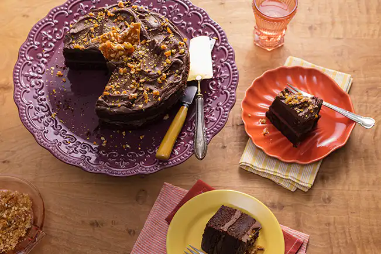

Voltar
Bolo de Chocolate com Amendoim

O segredo para deixar o bolo úmido sem precisar de calda está escondido bem aqui, nesta receita. E a combinação de chocolate com amendoim, hein? Um arraso.
Ingredientes
- 2 xícaras (chá) de farinha de trigo
- 1 xícara (chá) de chocolate em pó
- 1 maçã
- 4 ovos
- 1 xícara (chá) de óleo
- 1 xícara (chá) de café coado
- ½ xícara (chá) de açúcar
- ½ xícara (chá) de açúcar mascavo
- 1 colher (sopa) de fermento em pó
- manteiga para untar a fôrma
- farinha e chocolate em pó para polvilhar a fôrma
Modo de Preparo
- Preaqueça o forno a 180 ºC (temperatura média). Numa tigela pequena, misture ½ colher (sopa) de farinha de trigo com 1 colher (sopa) de chocolate em pó para polvilhar a fôrma.
- Unte com manteiga uma fôrma redonda de 20 cm de diâmetro e 10 cm de altura. Corte um disco de papel-manteiga usando o fundo da fôrma como medida, pressione com os dedos para colar o papel no fundo untado e unte novamente com manteiga sobre o papel. Polvilhe o fundo e laterais da fôrma com a mistura de farinha e chocolate, bata bem sobre a pia para retirar o excesso.
- Numa tigela, misture a farinha com o chocolate em pó e reserve. Lave, seque e corte a maçã ao meio - nem precisa descascar. Retire as sementes, corte em pedaços médios e transfira a maçã para o liquidificador.
- Numa tigela pequena, quebre um ovo de cada vez e junte à maçã - se um estiver estragado você não perde a receita. Acrescente o café, o óleo, os açúcares e bata bem até formar ficar liso.
- Transfira para uma tigela e acrescente a mistura de secos, em etapas, passando pela peneira. Misture delicadamente com o batedor de arame para incorporar. Por último, misture o fermento em pó.
- Coloque a massa na fôrma preparada e gire sobre a bancada para nivelar. Leve ao forno para assar por cerca de 1 hora - para verificar, espete um palito: se sair limpo, está pronto, caso contrário deixe assar por mais alguns minutos. Enquanto isso, aproveite para preparar a pasta de chocolate e amendoim.
- Retire do forno e deixe o bolo esfriar completamente antes de desenformar.
Para a Pasta de Chocolate com Amendoim
Ingredientes
- 3 xícaras (chá) de chocolate meio amargo (55-60%) picado grosseiramente (cerca de 450 g)
- 1¼ de xícara (chá) de amendoim sem casca nem sal
- 3 colheres (sopa) de óleo
Modo de Preparo
- Coloque o chocolate numa tigela de vidro e leve para rodar no micro-ondas, em potência média, de 30 em 30 segundos até derreter - mexa a cada etapa para não queimar e derreter de maneira uniforme. Reserve.
- Numa frigideira pequena, coloque o amendoim e leve ao fogo médio para aquecer por 5 minutos, mexendo de vez em quando, até ficar levemente tostado. Transfira o amendoim ainda quente para o liquidificador e bata, no modo pulsar, até formar uma farofa úmida - se necessário, pare de bater e raspe a lateral do copo com uma espátula para misturar. Junte o óleo, o chocolate derretido e bata bem até formar uma pasta.
- Transfira para uma tigela e leve à geladeira para esfriar por cerca de 40 minutos, ou até que as bordas estejam firmes e o centro ainda derretido - assim a pasta fica na consistência ideal para rechear e cobrir o bolo. Mexa bem com uma colher e mantenha em temperatura ambiente até a hora de usar. Se preferir, prepare o creme de chocolate com antecedência e mantenha na geladeira até a hora de montar o bolo. Basta reaquecer no micro-ondas, de 10 em 10 segundos, mexendo a cada etapa até ficar macio novamente.
- Assim que o bolo estiver frio, cubra a assadeira com um prato e vire de uma só vez para desenformar. Descarte o papel manteiga e desvire o bolo sobre a tábua - assim a base, que é mais retinha, fica do lado de cima.
- Com uma faca de pão, corte apenas a superfície do topo do bolo para nivelar. Corte o bolo ao meio, no sentido da largura, para formar duas camadas (se preferir, utilize uma linha grossa em vez da faca).Transfira a primeira camada de bolo para o prato de servir.
- Com uma colher, espalhe metade da pasta de chocolate sobre a primeira camada do bolo, do centro para a borda - ela vai ser o recheio. Cubra com a segunda camada de bolo e pressione delicadamente para firmar.
- Coloque o restante da pasta sobre o topo do bolo, às colheradas, e espalhe com as costas da colher para ficar rústico.